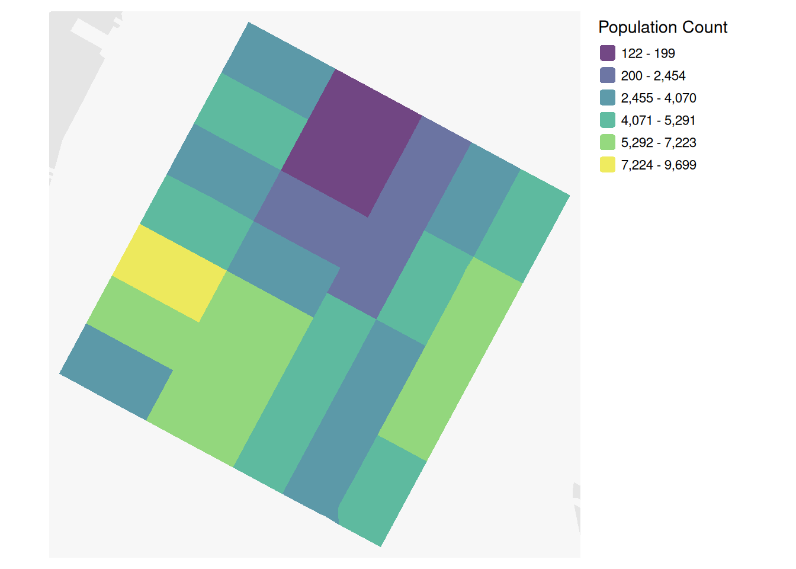
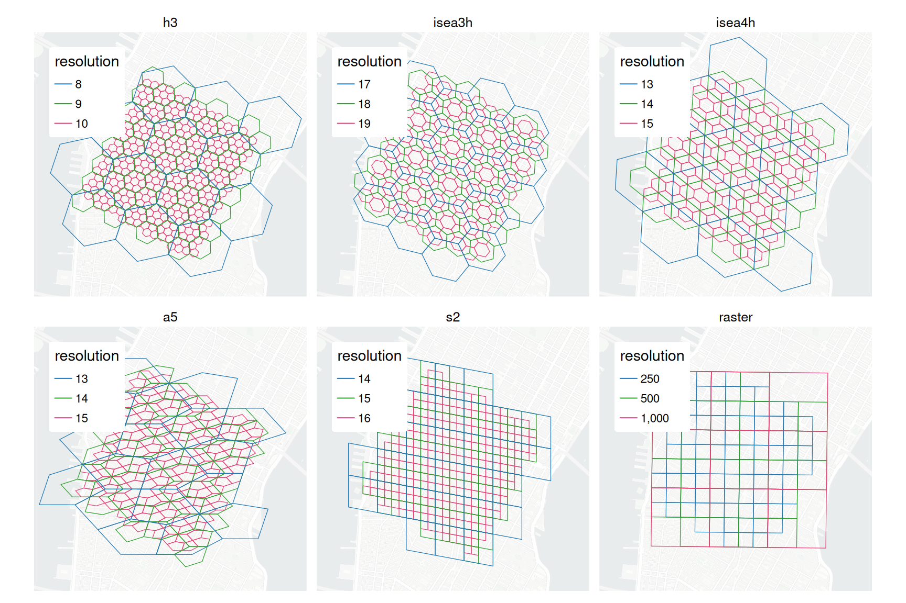
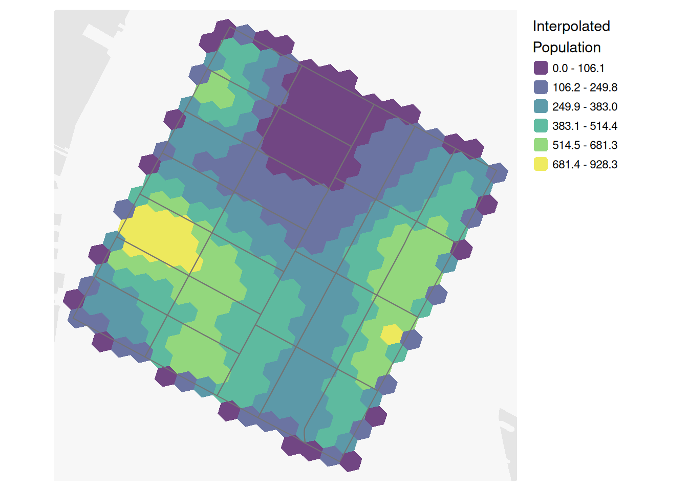
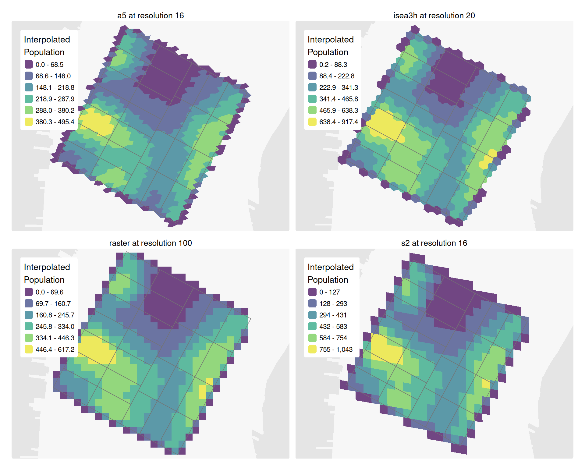
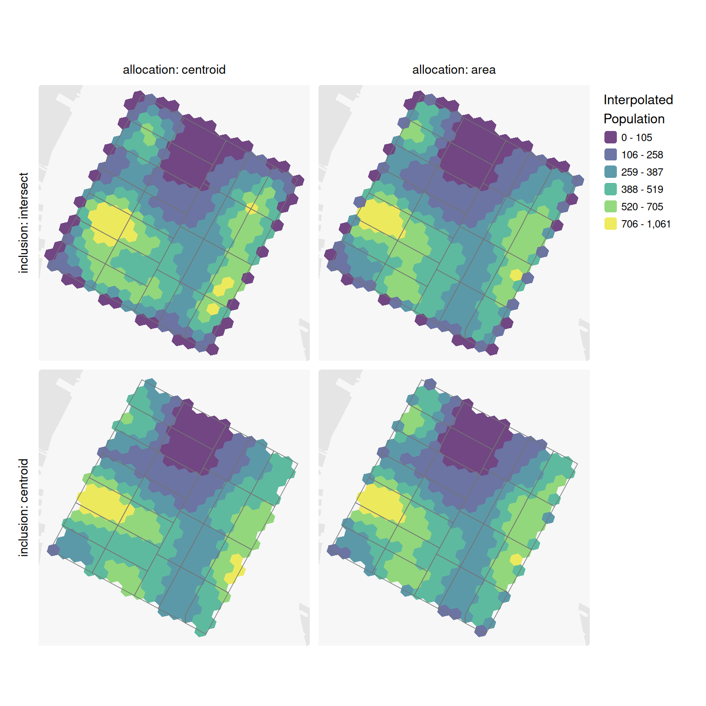
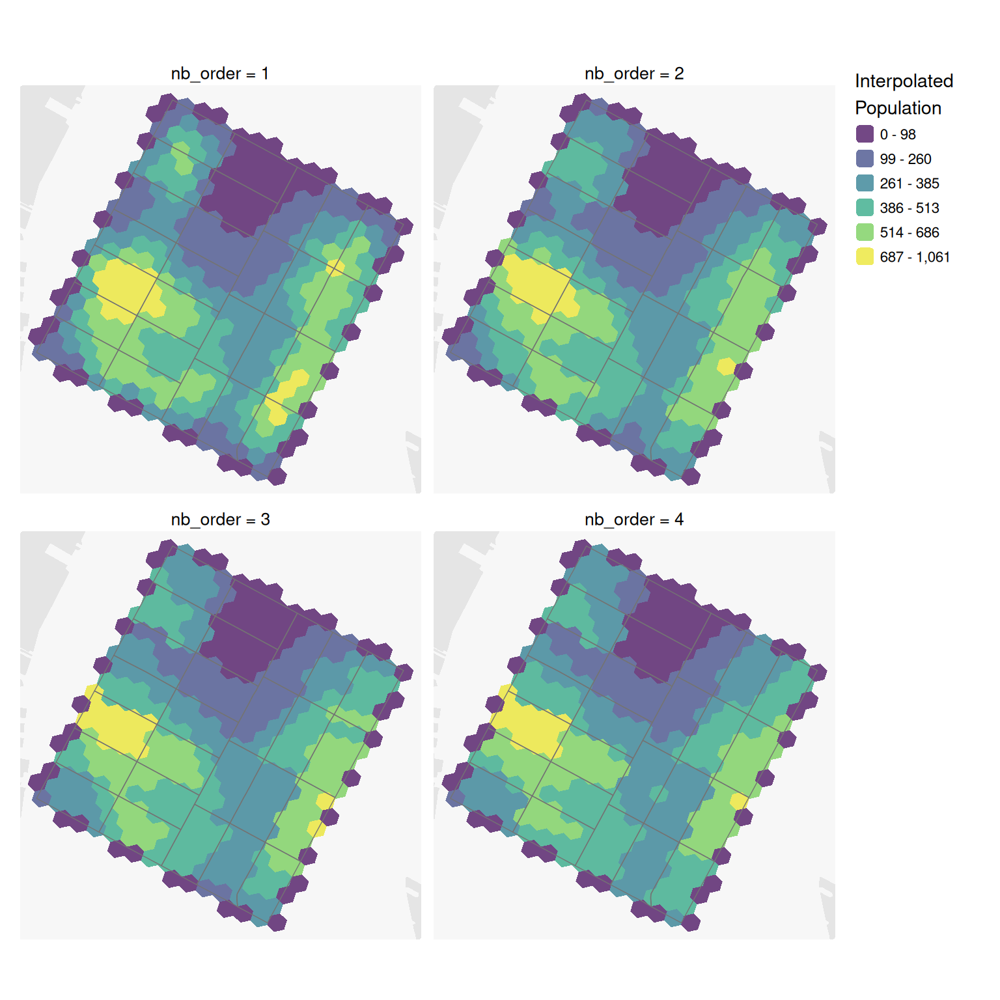
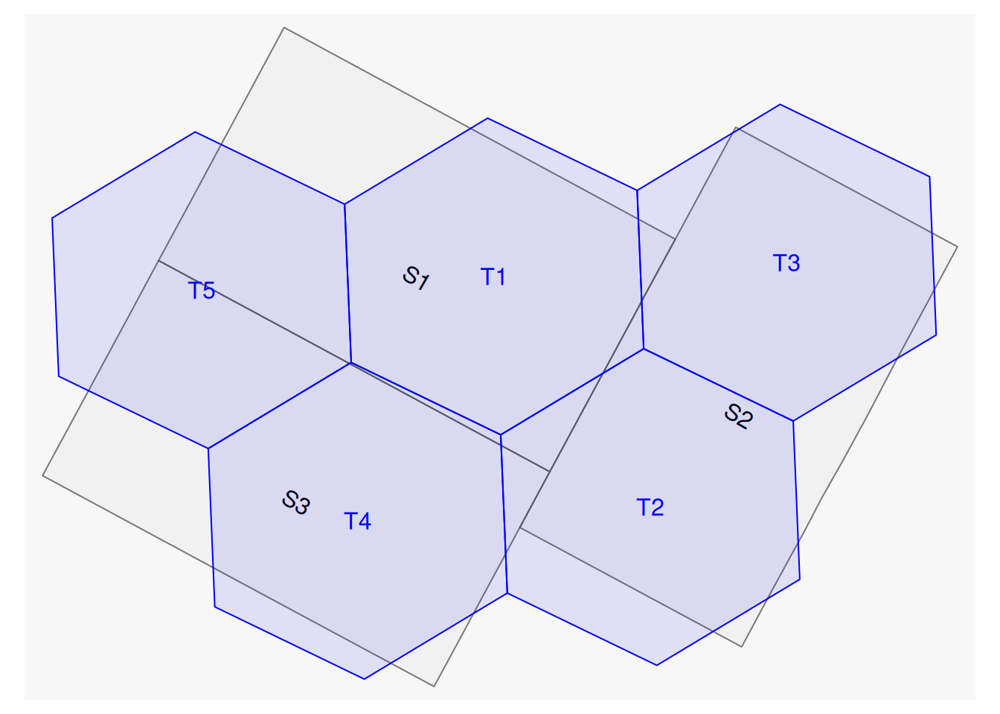
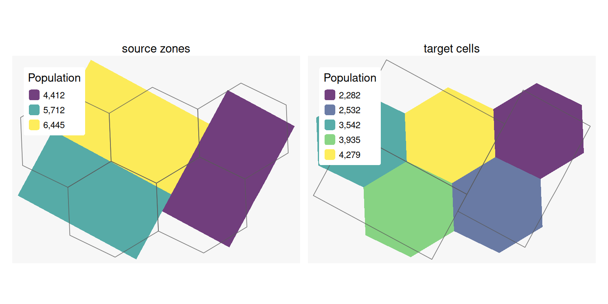

{pycnogrid}: Flexible pycnophylactic interpolation to disgrete global and local grid systems
Introduction
Spatial data capturing the socioeconomic, demographic, environmental, health, travel, and other characteristics of different places has become increasingly abundant. However, much of these data are released in a spatially aggregated form, represented through administrative and statistical reporting units such as census tracts, postal codes, or traffic analysis zones. While these spatial units facilitate data collection, privacy protection, and dissemination, they may not align with the geographic frame associated with particular research questions or analyses. This mismatch lies at the heart of the modifiable areal unit problem (MAUP) (Openshaw 1979), which recognizes that observed spatial patterns and statistical relationships may vary according to the zoning system used to aggregate data. Researchers and practitioners therefore frequently face the challenge of transferring information from source zones to alternative target geographies, creating a longstanding need for areal interpolation methods. At the same time, the growing use of regular grids and discrete global grid systems (DGGSs) for spatial analysis has increased the demand for methods capable of redistributing aggregated data to alternative spatial tessellations while preserving known source-zone totals.
Among areal interpolation methods for extensive data, Tobler’s pycnophylactic interpolation (Tobler 1979) is distinguished by its emphasis on mass or volume preservation and spatial smoothing. Rather than assuming constant distributions of the source zone values across the target cells, pycnophylactic interpolation iteratively smooths the estimated target values while enforcing the preservation of the source zone totals in the system. With sufficiently fine target geometries, the result is a continuous spatial surface that preserves known aggregate quantities while reducing the abrupt discontinuities across zones introduced by administrative boundaries. In doing so, the method acknowledges that spatial aggregation obscures local variation and seeks to recover a plausible representation at a finer alternative level of geography. The resulting surface embodies the intuition that nearby locations are expected to exhibit greater similarity than more distant locations (Tobler 1970; Tobler 2004).
Several implementations of Tobler’s pycnophylactic interpolation exist for popular computing languages, including {pycno} (Brunsdon 2025) for R and within the {tobler} package (Eli Knaap et al. 2026) for Python, which is part of the larger Python Spatial Analysis Library (PySAL) (Sergio Rey et al. 2026). These existing implementations have largely followed Tobler’s initial formulation of pycnophylactic interpolation from source zones to target raster cells. For example, the pycno() function from the {pycno} package converts source polygons to a regular grid and initializes a density surface by assigning a uniform density to all grid cells within each source zone. The density surface is then iteratively smoothed across neighbouring grid cells while correction steps ensure that the integrated target values within each source polygon remain equal to their original observed total. Built on the legacy sp framework, the package requires SpatialPolygonsDataFrame inputs and outputs a SpatialGridDataFrame. The PySAL tobler implementation follows a similar raster-based philosophy but performs smoothing through convolution-based operations on an array, with repeated correction steps used to preserve source-zone totals in the target cells.
Building on these foundations, the primary contribution of pycnogrid is not a new pycnophylactic algorithm for users of the R computing language, but rather a more flexible implementation that extends pycnophylactic interpolation beyond regular raster lattices to a range of DGGS spatial grids. Capitalizing on the contemporary simple features sf (Pebesma 2018) library and the neighbour relationships and spatial weights matrices that underpin much of modern spatial analysis and econometrics (Anselin 1988) (through the spdep (Bivand 2022) and sfdep (Parry and Locke 2024) packages), pycnogrid implements pycnophylactic interpolation as a generalized neighbourhood-based smoothing problem. Rather than restricting smoothing to a regular raster lattice, values are smoothed using the neighbourhood structure defined by the underlying grid, allowing the method to be applied consistently across grid systems including H3, A5, S2, and various ISEA apertures, as well as traditional raster grids. This flexibility enables users to select a grid system whose geometric properties are better aligned with the requirements of subsequent analyses.
Example Workflow
The primary function in {pycnogrid} is to_grid(), which takes the following parameters:
```{r}
#| label: to_grid
#| echo: true
pcynogrid::to_grid(
source,
value_col,
id_col = NULL,
grid_type = c("h3", "a5", "s2", "isea3h", "isea4h", "isea7h", "raster"),
resolution,
cell_inclusion = c("intersect", "centroid"),
cell_allocation = c("area", "centroid"),
nb_order = 1,
max_iter = 500,
tolerance = 1e-4,
include_self = TRUE,
missing_policy = c("abort", "warn", "ignore")
)
```where
-
sourceis the source {sf} polygon layer containing the totals to be interpolated. Given the geometry calculations performed by the tool, only inputs with projected coordinate reference systems are accepted. -
value_colis the column insourcecontaining the count variable to be smoothed and preserved -
id_colis an optional column uniquely identifying each source polygon, if omitted, an internal identifier is created -
grid_typespecifies the target grid system. Supported options are H3, A5, S2, ISEA grids with aperture-3, 4, and 7, and raster-derived polygon cells -
resolutioncontrols the size of the target grid cells. Its interpretation depends on the selected grid type -
cell_inclusiondefines how candidate grid cells are selected for interpolation. With “intersect”, cells are included if they intersect a source polygon. With “centroid”, cells are included only when their centroid falls inside a source polygon. -
cell_allocationdefines how source totals are allocated to grid cells. With “area”, values are allocated in proportion to the area of overlap between source polygons and grid cells. With “centroid”, each grid cell is assigned to the source polygon containing its centroid. -
nb_orderspecifies the neighbourhood order used during smoothing. A value of 1 uses immediately adjacent cells, while larger values extend the smoothing neighbourhood outwards from a given cell. -
max_itersets the maximum number of smoothing iterations. If set to 0, the function returns the initial allocation without iterative smoothing. -
tolerancedefines the convergence threshold. Iteration stops when the relative change in estimated cell densities falls below this value. -
include_selfcontrols whether each cell includes its own current value when calculating the neighbourhood mean during smoothing. -
missing_policydetermines how the function handles source polygons that receive no target grid cells, which might arise due to a mismatch in source polygon sizes and target grid cell resolutions. “abort” stops with an error, “warn” returns a warning, and “ignore” proceeds silently.
Together, these parameters define three main stages of the workflow: construction of the target grid, allocation of source totals to grid cells, and iterative pycnophylactic smoothing. The grid parameters determine the spatial support of the output surface, the allocation parameters determine the initial mass-preserving estimate, and the smoothing parameters control how values are redistributed across neighbouring cells while preserving the original source-zone totals. Additional functions, such as to_h3() and to_a5(), are grid-specific wrappers around to_grid(). The properties of the different grid systems are discussed further below.
Source Zone Data
The first part of a pycnophylactic workflow is to obtain more aggregate source data to be smoothed to a finer-resolution target grid. Pycnophylactic interpolation is designed for non-negative extensive variables – quantities such as counts that can meaningfully be divided among smaller areas and whose total should be preserved. For an example case, 2020 population data was obtained for census tracts in New York City using the {tidycensus} (Walker and Herman 2026) package. A sub-sample of this data covering an area of Lower Manhattan is included in the package as nyc_ct_small (Figure 1). The census tracts in this area contain a total of 113,359 people.
Target Grid Systems
The choice of a target grid system is not merely a computational consideration as different grid systems prioritize different geometric and analytical properties, including equal-area representation, shape preservation, neighbourhood structure, hierarchical indexing, and scalable spatial computation (Table 1). Sample grids generated at different resolution levels to cover the census tracts for Lower Manhattan from Figure 1 are shown in Figure 2.
| Grid System | Cell Geometry | Area Property | Extent and Hierarchy | Subdivision / Aperture | Neighbour Topology | Analytical Implication |
|---|---|---|---|---|---|---|
| Raster | Rectangular cells in a projected CRS | Equal-area only when constructed in an appropriate projected CRS | Usually regional or local; hierarchy is not intrinsic | Resolution specified directly in map units | Four- or eight-neighbour structure, depending on rook or queen contiguity | Simple and familiar benchmark, but geometric properties depend on the selected projection and resolution |
| H3 | Mostly hexagons, with twelve pentagons | Approximately equal-area | Global discrete grid with a nested hierarchy | Aperture-7 hierarchy with alternating cell orientation across resolutions | Usually six edge-neighbours; pentagons have five | Strong indexing and neighbourhood structure, particularly useful for mobility, accessibility, and spatial aggregation |
| ISEA3H, ISEA4H, ISEA7H | Mostly hexagons, with twelve pentagons on an icosahedral projection | Equal-area | Global discrete grid with a nested hierarchy | Aperture-3, Aperture-4, and Aperture-7 hierarchies | Usually six edge-neighbours; pentagons have five | Equal-area hexagonal option with relatively fine-grained hierarchical scaling between resolutions |
| A5 | Equal-area pentagonal cells | Equal-area | Global discrete grid with a hierarchical structure | Five-way initial refinement, followed by four-way refinement | Predominantly five edge-neighbours | Provides a global equal-area alternative with strong indexing, although its pentagonal geometry may produce more directional variation than hexagonal grids |
| S2 | Quadrilateral cells projected from the faces of a cube | Not equal-area | Global discrete grid with a nested hierarchy | Quadtree subdivision: each cell has four children | Variable topology across cube-face boundaries | Strong global indexing and web-mapping infrastructure, but cell areas vary substantially across locations |
Of the currently supported grid types, raster grids are the most familiar, representing geographic space as a regular lattice of equally sized cells. Their simplicity has made them the dominant representation for continuous spatial phenomena and the traditional support for pycnophylactic interpolation. However, raster grids are inherently planar, which requires projection choices, and neighbourhood relationships depend on user-specified contiguity definitions (e.g., rook or queen adjacency). In terms of indexing, raster cells are not uniquely identified by a global index and any hierarchical relationships among cells of different resolutions would have to be manually specified. The neighbourhood structure is also anisotropic, with greater distances required to traverse cells diagonally than horizontally or vertically. Support for rasters in pycnogrid is offered through the terra (Hijmans et al. 2026) package.
The H3 grid system is a global-scale spatial indexing system developed by Uber to support routing and mobility analytics. It is a hierarchical hexagonal (mostly – twelve pentagonal cells are required to accommodate the topology of a spherical surface) DGGS built on an icosahedral projection of the Earth with 16 resolution levels. H3 offers scalable hierarchical spatial indexing as each cell at a given level of the hierarchy can be sub-divided into a set of 7 child sells, although the cell tesselations rotate slightly at each resolution level. Compared to raster cells, the hexagonal tesselation also offers consistent neighbourhood relationships and more isotropic traversal pathways between neighbouring cells with approximately equal distances to all first-order neighbours. Because H3 is built on a gnomonic projection, hexagons tend to preserve their shape in projected spatial analytical workflows. However, because of this projection, H3 cells distort globally and are not equal area. While they may be approximately equal at the urban scale, cells compared at the global scale can differ in area quite significantly. Support for H3 in pycnogrid is offered through the h3o (Parry 2025) package.
The Icosahedral Snyder Equal Area (ISEA) grid system partitions the globe into equal area hexagons with 31 supported resolution levels. Similar to H3, twelve pentagonal cells are required. In contrast to H3, where cells are approximately equal area, ISEA grids prioritize identical cell areas with more aligned nesting. This comes at the cost of shape preservation, with ISEA hexagons appearing more elongated than H3 when represented in conventional geographic or local projected coordinate systems. The ISEA grid supports several different apertures, including Aperture-3, 4, 7, and 4/3 mixed. At aperture-3, parent cells divide into 3 child cells, while at aperture 7 the ISEA grid behaves similar to H3 with each cell splitting into 7 across resolution levels. Support for ISEA grids is offered through the hexify (Colling 2026) package.
The A5 grid system is a recent DGGS that is explicitly designed to be equal area across the globe. Based on pentagons and 31 different resolution levels, A5 cells at a given resolution sub-divide into 5 child cells. The primary motivation behind A5 is spatial analysis as the equal area properties of the grid system greatly simplify comparisons of densities, rates, and other aggregated quantities over space. However, the subdivision of parent into child cells is not regular with cell shapes becoming more elongated at higher resolutions, meaning the distance between cell centroids is not uniform. With these slightly elongated pentagonal shapes, A5 cells are more anisotropic than H3 cells, although the extent to which impacts traversal pathways across the equal area cell topology has not yet studied. Support for the A5 grid system is offered through the a5R (Graham 2026) package.
S2 was developed by Google for global-scale spatial indexing and geometric computation. S2 begins by projecting the Earth onto the flat planes of a cube. Within a 31-level resolution hierarchy, each cell sub-divides into 4 child cells. While use of H3 and A5 might be motivated by neighbourhood regularity and equal-area representation, respectively, S2 emphasizes hierarchical spatial indexing and efficient spherical geometry operations. Consequently, the use of S2 within {pycnogrid} may be attractive when interpolated data are intended for integration with large-scale geospatial databases, distributed computing environments, or workflows that already rely on S2 indexing. Support for S2 in pycnogrid is offered through the s2 (Dunnington et al. 2025) package.

Pycnophylactic Interpolation
With source data collected, the pycnophylactic smoothing can now be run. In this example case, an H3 grid at a resolution of 10 is used:
pycno_nyc_ct_small <- nyc_ct_small |>
pycnogrid::to_grid(
value_col = "populationE",
grid_type = "h3",
resolution = 10
)The results of this interpolation are shown in Figure 3 below:

The results for other grid types can be seen in Figure 4:

The summary statistics of the population variable for the different grid specifications is shown in Table 2. While the different grid types and resolutions necessarily produce different mean population values across the target cells, the total population spread over the target cells is intact.
| grid type | grid resolution | grid cell count | mean cell population | total population |
|---|---|---|---|---|
| a5 | 16 | 635 | 178.5181 | 113359 |
| h3 | 10 | 336 | 337.3780 | 113359 |
| isea3h | 20 | 351 | 322.9601 | 113359 |
| isea4h | 16 | 427 | 265.4778 | 113359 |
| raster | 100 | 504 | 224.9187 | 113359 |
| s2 | 16 | 312 | 363.3301 | 113359 |
The main customizations for to_grid() involve defining additional options to guide the pycnophylactic interpolation. First, the cell inclusion and allocation criteria impact how target cells are generated and how source values are allocated to them.
with
cell_inclusion = "intersect"andcell_allocation = "area", all cells intersecting the source polygons are retained, and source totals are allocated according to the area of overlap between source polygons and target cells. This is the most geographically complete and resolution robust representation of the source layer as the data from all source-target intersections are retained. Partially covered edge cells receive only the share of the source value associated with their covered area, avoiding the extrapolation of counts beyond source boundaries. These are the default settings.with
cell_inclusion = "intersect"andcell_allocation = "centroid", all intersecting grid cells remain in the target grid, but source values are assigned only to cells whose centroids fall within a source polygon. Target cells whose centroids fall outside the source polygons do not receive any initial allocation of the source values, although the smoothing process may allocate some values to these cells. Compared to area-based allocation, this simpler allocation method is more sensitive to the grid resolution and the placement of target cell centroids. Values associated with any source polygons that have no assigned target cells, such as small or narrow polygons, will be omitted from the system. Moreover, by representing a source value over the full extent of a target cell, this allocation method can extend or extrapolate source values beyond the original source polygon boundaries.with
cell_inclusion = "centroid"andcell_allocation = "area", only target cells whose centroids fall within the source layer are retained, but the retained cells receive source values according to their actual areas of overlap. While this avoids retaining cells that merely touch a source boundary, the resulting grid may not fully cover the source polygons, leading to a truncation in the spatial support offered by the target cells. The area-based allocation nevertheless helps to preserve source values in the system based on the areal overlap of source polygons and target cells.with
cell_inclusion = "centroid"andcell_allocation = "centroid", target cells are both selected and assigned according to centroid location. Each retained cell is associated with the source polygon containing its centroid, producing the simplest and most discrete source-to-grid assignment with the strongest concentrations of source values within the target cells. However, this approach is the most sensitive to grid resolution and alignment relative to the source polygons, risking truncated spatial support of the source layers within the target cell tessellation, the extrapolation of values beyond the source extent, and the potential loss of source values if no cell centroids fall within the original polygon boundaries.
The smoothed results using the default and other cell inclusion and allocation settings are shown in Figure 5 below.

The second customization involves setting the number of neighbours through the nb_order parameter. Here the default is 1, which results in the spatial weights matrix accounting for spatial relationships between a given target cell and its first-order neighbours with Queen contiguity. Increasing the order of the neighbourhood includes target cells from a larger neighbourhood which this has the effect of further smoothing out the spatial patterns of the interpolated values in the target cells. This can be seen in Figure 6.

Detailed Example
To explore how the smoothing algorithm works, the code below selects a subset of the nyc_ct_small census tracts and generates an H3 grid at resolution = 9. To limit the number of cells generated for this example, the cell_inclusion criteria is set to "centroid" so the target grid consists only of cells whose centroids fall within the source polygon geometries (Figure 7):

Within this scenario, the three source zones are indexed as and have the following observed populations:
with a total population .
Areal Interpolation
These source population values will be interpolated to the five target H3 grid cells indexed as .. The first step is to determine the spatial relationships between the source zones and target cells. Using the default cell_allocation based on "area", this relationship is represented by the calculation of an areal overlap matrix , where each element is the area of intersection between a source zone and target cell :
For the example source zones and target cells, these overlap areas (in ) are:
The rows of sum to the total area of each source zone covered by target cells within the source-target intersection, that is . With some grid cells not perfectly overlapping the source zones due to the use of centroid-based cell inclusion criteria in this example, the total covered area is less than the total area of a zone as defined by its geometry.
Similarly, the column sums of , calculated as , reflect the covered area of each target cell, or the portion of each target cell lying within the source polygons. These column sums will inform the construction of a column-normalized matrix below.
Next, the overlap areas for each source zone are converted to areal interpolation weights by row-standardization:
The resulting source zone to target cell weight matrix is:
Because each row of sums to one (e.g. ), these weights ensure that the entire total from each source zone is distributed across the target cells while preserving the original total of the source values in the system.
The initial target cell estimates are obtained by applying these weights to the source values in :
which yields the areally-interpolated value estimates for each of the five target cells:
From this, the source zone value total allocated within the system remains unchanged:
Because pycnophylactic interpolation works with densities, these allocated totals are converted to density estimates by dividing each target cell’s allocated population by its covered area in the source zone-target cell intersection (which are the column sums of ):
Resulting in the vector of initial target cell densities:
These densities represent the estimated population density over the portion of each target cell covered by the source polygons. Using area-based cell allocation, density is calculated for cells that extend beyond the source-zone boundaries using only the covered area represented in the source-target intersection. By extension, when a source zone is not fully covered by target cells, as is the case when using centroid-based cell inclusion criteria in this analysis, the incomplete spatial support results in the entire source value total for a zone being distributed across the cells that intersect it. Consequently, the procedure preserves source totals within the represented spatial support, even when that support differs from the original source geometry.
Spatial Smoothing
Once the initial density estimates have been obtained for the target cells, pycnophylactic smoothing proceeds iteratively. The first step is to define the neighbourhood relationships among target cells. Using a typical first-order Queen contiguity for the five target cells in this example, the neighbourhood structure is represented by the row-standardized sparse spatial weights matrix:
Each row in describes the cells contributing to the smoothed density estimate of a target cell. Because the matrix is row-standardized, each row sums to one and the smoothing operation computes a local weighted average of neighbouring densities.
The first smoothing step () involves multiplying the initial density vector by the spatial weights matrix :
Here, the denotes these are the smoothed density estimates before correction. This operation reduces abrupt differences between neighbouring cells by replacing each cell’s density with the average density of its neighbourhood. For target zone 1:
However, smoothing alone does not always preserve the original source-zone totals. After smoothing, the implied source-zone total estimates are calculated by multiplying the 3 by 5 overlap matrix (which contains information on how much of each target cell’s area is within the system defined by source zone-target cell spatial relationship) and the 5 by 1 column vector of smoothed densities:
The resulting source values contained within the 3 by 1 column vector generally differ from their observed source totals (). To restore the original source-zone populations, a correction factor is calculated for each source zone:
Resulting in this column vector of ratios:
The correction factor compares the observed source total to the total implied by the smoothed density surface. A value of indicates that smoothing preserved the source-zone total exactly, so no adjustment is required. A value of indicates that the smoothed density surface underestimates the observed population in source zone i, requiring the densities within that source zone to be increased. Conversely, a value of indicates that smoothing overestimates the source-zone population, requiring the densities to be decreased.
For example, indicates that the smoothed density surface underestimates the population of source zone 1 by approximately 3.4% when aggregated back to the source geometry. Likewise, indicates that the smoothed surface overestimates the population of source zone 2 by approximately 4.3%.
These source-zone correction factors are then redistributed back to target cells according to their overlap relationships using a column standardized weights matrix , with :
From this, each target cell receives a weighted average of the correction factors from the source zones that it intersects. These correction factors can now be applied to adjust the smoothed densities for each target cell for the first iteration:
Or, using scalar notation:
In this way, pycnophylactic smoothing uses the original source zone polygons to ensure the total mass is preserved on the smoothed surface. The corrected densities form the starting point for the next iteration . Smoothing and correction continue until the relative change in target-cell densities between successive iterations falls below a specified tolerance. In this case, the convergence criterion is defined by calculating the mean relative change in target cell densities across the current and previous iterations:
with used to prevent any division by zero in the denominator. Iteration stops when is less than the convergence tolerance, which is set at a default of . For the present case, the error from the first iteration is 0.0254, suggesting further rounds of smoothing are required to reach convergence.
The final results of the interpolation are shown in Figure 8:

Conclusion
pycnogrid offers a flexible implementation of Tobler’s pycnophylactic interpolation for redistributing polygon-based count data to discrete global and raster grid systems. Building on existing implementations of the concept, the smoothing algorithm that underpins the package expresses the interpolation through the lens of neighbourhoods and spatial weights, enabling the pycnophylactic approach to be applied to a range of different grid systems. At present, these grid systems include H3, A5, S2, and ISEA grids, as well as traditional raster arrays.
While the preservation of mass or volume inherent in the source count data is central to the pycnophylactic smoothing approach, a core aspect of pycnogrid is the option to allocate and preserve mass while accounting for source zone and target cell areal intersections. The package also makes explicit several analytical choices that are often implicit in interpolation workflows. Users may select how target cells are included, how source values are allocated to cells, the neighbourhood order used for smoothing, and whether cells contribute to their own neighbourhood mean. These choices affect the implied spatial support and degree of smoothing, and should be selected with reference to the intended downstream application rather than treated as purely technical defaults.
While pycnophylactic interpolation produces a smooth, mass-preserving representation that is consistent with the available source totals and the chosen target-grid structure, the outputs are best understood as analytically-useful plausible estimates rather than as observed values at a finer level of geography. Future work could extend pycnogrid through ancillary-data weighting (e.g. Tapp 2010), alternative smoothing operators, and support for additional area or shape preserving DGGSs. Systematic evaluations of how grid geometry, resolution, hierarchy, and smoothing assumptions affect the robustness of downstream spatial analyses to the MAUP would also be valuable. To that end, by bringing pycnophylactic interpolation to contemporary vector-based spatial workflows and multiple grid systems, pycnogrid provides a practical foundation for creating comparable, mass-preserving gridded representations of aggregated spatial data.
Anselin, Luc. 1988. Spatial Econometrics: Methods and Models. Springer Netherlands. https://doi.org/10.1007/978-94-015-7799-1.
Bivand, Roger. 2022. “R Packages for Analyzing Spatial Data: A Comparative Case Study with Areal Data.” Geographical Analysis 54 (3): 488–518. https://doi.org/10.1111/gean.12319.
Brunsdon, Chris. 2025. Pycno: Pycnophylactic Interpolation. https://doi.org/10.32614/CRAN.package.pycno.
Colling, Gilles. 2026. Hexify: Equal-Area Hex Grids on the ’Snyder’ ’ISEA’ ’Icosahedron’. https://doi.org/10.32614/CRAN.package.hexify.
Dunnington, Dewey, Edzer Pebesma, and Ege Rubak. 2025. S2: Spherical Geometry Operators Using the S2 Geometry Library. https://doi.org/10.32614/CRAN.package.s2.
Eli Knaap, Renan Xavier Cortes, James Gaboardi, et al. 2026. Pysal/Tobler: V0.14.0. April 10. https://doi.org/10.5281/ZENODO.3386576.
Graham, Hugh. 2026. a5R: ’A5’ Discrete Global Grid System. https://doi.org/10.32614/CRAN.package.a5R.
Hijmans, Robert J., Andrew Brown, and Márcia Barbosa. 2026. Terra: Spatial Data Analysis. https://doi.org/10.32614/CRAN.package.terra.
Openshaw, Stan. 1979. “A Million or so Correlated Coefficients: Three Experiment on the Modifiable Areal Unit Problem.” Statistical Applications in the Spatial Sciences.
Parry, Josiah. 2025. H3o: H3 Geospatial Indexing System. https://doi.org/10.32614/CRAN.package.h3o.
Parry, Josiah, and Dexter Locke. 2024. Sfdep: Spatial Dependence for Simple Features. https://doi.org/10.32614/CRAN.package.sfdep.
Pebesma, Edzer. 2018. “Simple Features for r: Standardized Support for Spatial Vector Data.” The R Journal 10 (1): 439. https://doi.org/10.32614/rj-2018-009.
Sergio Rey, Philip Stephens, Taylor Oshan, et al. 2026. Pysal/Pysal: Release V26.01. February 1. https://doi.org/10.5281/ZENODO.2538852.
Tapp, Anna F. 2010. “Areal Interpolation and Dasymetric Mapping Methods Using Local Ancillary Data Sources.” Cartography and Geographic Information Science 37 (3): 215–28. https://doi.org/10.1559/152304010792194976.
Tobler, W. R. 1970. “A Computer Movie Simulating Urban Growth in the Detroit Region.” Economic Geography 46 (June): 234. https://doi.org/10.2307/143141.
Tobler, Waldo. 2004. “On the First Law of Geography: A Reply.” Annals of the Association of American Geographers 94 (2): 304–10. https://doi.org/10.1111/j.1467-8306.2004.09402009.x.
Tobler, Waldo R. 1979. “Smooth Pycnophylactic Interpolation for Geographical Regions.” Journal of the American Statistical Association 74 (367): 519–30. https://doi.org/10.1080/01621459.1979.10481647.
Walker, Kyle, and Matt Herman. 2026. Tidycensus: Load US Census Boundary and Attribute Data as ’Tidyverse’ and ’Sf’-Ready Data Frames. https://doi.org/10.32614/CRAN.package.tidycensus.